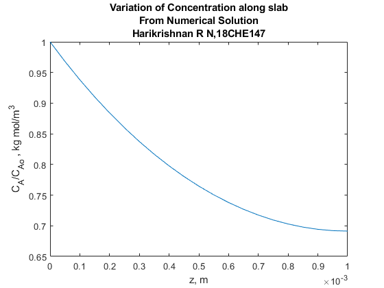

Question 7 Harikrishnan R N, 18CHE147
Here I have shown how to solve the second order ordinary differential equation with two boundary conditions.
The physical phenomena is Diffusion with Chemical Reaction in one dimensional slab
Contents
Defining Constants :
ca0 = 0.2 ; % kg mol/m^3, constant concentration at surface k = 1e-3 ; % s^-1, homogeneous reaction rate constant m = 1 ; % Order of reaction Dab = 1.2e-9 ; % m^2/s, binary diffusion coefficient L = 1e-3 ; % m, distance from catalyst surface to reaction site phi = L*(k/Dab)^0.5; % Thiele Modulus
Solving the Boundary Value Problem :
Here I have shown how to solve the boundary value problem
%First we define the scale along which we are solving the equation n_step = 21 ; x = linspace(0,1,n_step) ; %Defining a function that provides initial guess for BVP : guess = @(x) [ exp(-phi*x) 0.*exp(-phi*x) ]; %Defining a function that provides the boundary conditions : bcs = @(ya,yb) [ ya(1)-1 yb(2) ] ; %Defining a function that provides the ODE : odes = @(x,y) [ y(2) (phi^2)*y(1)^m ] ; %Solving the BVP : solinit = bvpinit(x ,@(x) guess(x)); % Trail solution given by guess function sol = bvp4c(@(x,y) odes(x,y),@(ya,yb) bcs(ya,yb),solinit); % bvp solved y = deval(sol,x) ; % Evaluating the solution to the BVP figure plot(x*L,y(1,:)) title({'Variation of Concentration along slab';'From Numerical Solution';'Harikrishnan R N,18CHE147'}); xlabel('z, m') ; ylabel('C_{A}/C_{Ao} , kg mol/m^{3}');
Comparing with the Analytical Solution :
Here we will compare the above obtained numerical solution with the analytical solution.
Ca = cosh(phi*(1-x))/cosh(phi) ;
figure
plot(x*L,Ca)
title({'Variation of Concentration along slab';'From Analytical Solution';'Harikrishnan R N,18CHE147'});
xlabel('z, m') ; ylabel('C_{A}/C_{Ao} , kg mol/m^{3}');